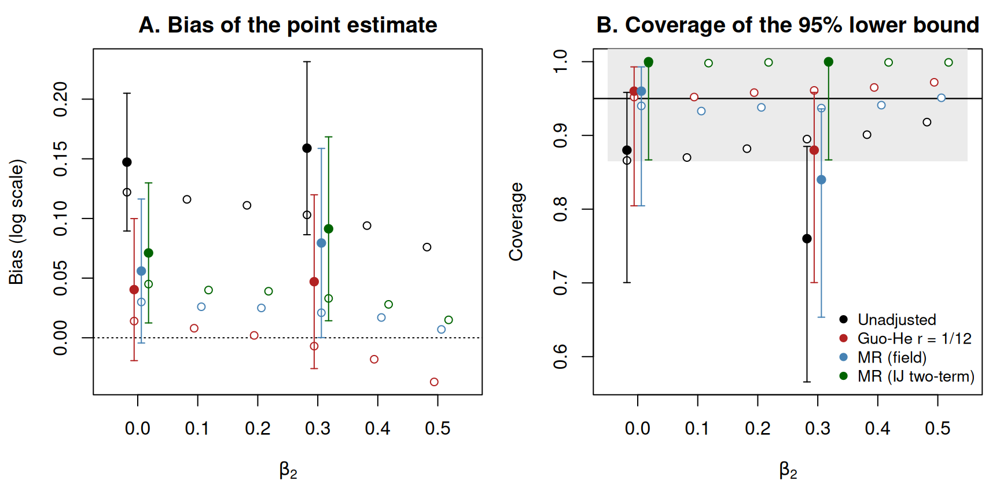
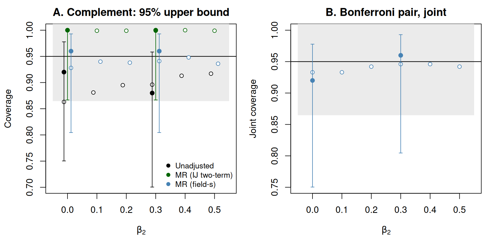

# The article's own run is an illustration of the code: two cells, a few
# replicates, and Guo and He's bootstrap at a small B. The manuscript ran six
# cells at 2,000 replicates each with B = 2000; the settings for that run are
# given in the last section, with its cost.
cells <- c(0, 0.3) # beta_2 cells (manuscript: (0:5) / 10)
n_rep <- 25L # replicates per cell (manuscript: 2000L)
B_gh <- 200L # Guo and He bootstrap resamples (manuscript: 2000L)
mr_draws <- 5000L # multiplier draws (manuscript: 5000L)
R_out <- 1000L # field: outer Monte Carlo (manuscript: 1000L)
R_in <- 500L # field: inner Monte Carlo (manuscript: 500L)
n_big <- 2e5 # large-sample size for the truth curve (manuscript: 2e6)
n_workers <- min(2L, future::availableCores()) # set to your cores for a real run
# This article is written for the current CRAN release of forestsearch; the
# two functions it uses are exported from 0.4.0 on.
if (utils::packageVersion("forestsearch") < "0.4.0") {
stop("This article needs forestsearch >= 0.4.0. ",
"Update it with install.packages(\"forestsearch\").")
}Post-selection bounds on a nested continuum: the Guo and He (2021) design
Section S4 of León and Anderson (2026b), with the code that produces it
2026-10-30
Source:vignettes/articles/guohe-nested-continuum.qmd
User settings. These are the only values to change to run this article at another size (see Running the manuscript’s design at the end).
knitr::opts_chunk$set(comment = "#>", fig.align = "center")
library(forestsearch)
library(survival)
library(future)
library(future.apply)
RNGkind("Mersenne-Twister", "Inversion", "Rejection")
z95 <- qnorm(0.95)Guo and He (2021) treat subgroup analysis in two steps: identify the subgroup with the largest estimated effect by the argmax over a prespecified candidate family, then bound the effect of the subgroup so identified. Their post hoc design (their Section 5.2 and Table 7) runs both steps on a nested continuum of cutpoints, where neighbouring candidates differ by a single subject. It therefore shows what the argmax identifies on such a family, and what inference must then correct. Section S4 of León and Anderson (2026b) runs that design exactly as published and sets forest search’s post-selection bounds beside Guo and He’s. This article is that section with its code.
What the section compares, and why the targets coincide.
- Guo and He’s selection is the argmax of the candidate effects. Forest search without its consistency screen reduces to the same primitive, so on this design the two methods identify the same subgroup and differ only in how they correct its effect (León and Anderson 2026a, Supplementary Section S3.5).
- Their targets — the best subgroup effect and the best selected subgroup effect — are forest search’s two estimands, for the true harm region and for the region actually selected. Everything below is scored against , the effect of the subgroup actually selected.
- On the selected subgroup, four one-sided 95% lower bounds on are compared: the unadjusted bound (the within-subgroup Cox analysis of as if it had been prespecified), Guo and He’s bound at , MR (field) and MR (IJ two-term), the conservative reference.
- On the complement , Guo and He’s framework defines no bound: the complement is not a member of their family and not the argmax of any functional. The field-s upper bound and the Bonferroni pair are shown there as a capability the comparison does not score against them.
What this article does. It carries the complete code — the data-generating mechanism, the nested family, the truth curve, the four bounds, the complement and the pair, the Monte Carlo loop and the summaries — in a form a reader can run. Its own run is small (2 cells, 25 replicates each, Guo and He at = 200), enough to exercise every path and draw the figure. The manuscript’s results, from 2,000 replicates per cell at = 2000, are then given in full so the reader has them in mind. The seeds follow the manuscript’s own scheme, so a run at its settings reproduces its per-replicate records, not only its summaries.
Bounds are read by their location on the hazard-ratio scale against one and against the planted effect: a lower bound on the hazard ratio in above one is on the harm side; an upper bound on the hazard ratio in below one is on the benefit side. The locations reported are where the bounds sit, not claims.
The design
Guo and He’s Section 5.2 generates subjects with and treatment from the proportional hazards model with a unit exponential baseline hazard, for and otherwise, and censoring with , about 40% across the cells; . The true harm region is , about 150 subjects. The candidates are for . Because an estimate changes only where passes an observed value of , the family is taken to be the distinct cuts at 30 and at every observed — nested, cut at every observed value, about 151 candidates per replicate. This discretisation is the manuscript’s; Guo and He do not state one.
W_MAX <- 80; C_LO <- 30; C_HI <- 60
# One trial under the Section 5.2 design.
sim_data <- function(beta2, n) {
w <- runif(n, 0, W_MAX)
d <- rbinom(n, 1L, 0.5)
b <- ifelse(w <= C_LO, beta2, 0)
t_event <- rexp(n, rate = exp(b * d))
t_cens <- exp(runif(n, -1.25, 1.00))
data.frame(time = pmin(t_event, t_cens), event = as.integer(t_event <= t_cens),
treat = d, w = w)
}
# The nested family: one 0/1 membership column per distinct cutpoint, and the
# same family as a list of row indices (the form fs_mr_inference() takes).
nested_family <- function(df) {
cuts <- c(C_LO, sort(df$w[df$w > C_LO & df$w <= C_HI]))
nm <- sprintf("cand_%03d", seq_along(cuts))
memb <- vapply(cuts, function(cc) as.integer(df$w <= cc), integer(nrow(df)))
colnames(memb) <- nm
list(df = cbind(df, as.data.frame(memb)), cuts = cuts, names = nm,
members = stats::setNames(lapply(seq_along(cuts),
function(j) which(memb[, j] == 1L)), nm))
}
# The standard analysis of every candidate: the treatment-only Cox fit within
# S(c), its coefficient and model-based standard error.
family_fits <- function(fam) {
k <- length(fam$names)
est <- se <- rep(NA_real_, k)
for (j in seq_len(k)) {
sub <- fam$df[fam$members[[j]], , drop = FALSE]
fit <- try(suppressWarnings(
survival::coxph(survival::Surv(time, event) ~ treat, data = sub)), silent = TRUE)
if (!inherits(fit, "try-error")) {
est[j] <- unname(coef(fit)[[1L]])
se[j] <- unname(sqrt(vcov(fit)[1L, 1L]))
}
}
list(est = est, se = se)
}
# The identifier: the pure argmax of the raw coefficient, Guo and He's
# selection. Larger beta is the effect of interest, and beta(c) is a log hazard
# ratio, so the argmax picks the subgroup with the largest estimated hazard
# ratio -- forest search's harm-side argmax, with no sign change.
argmax_candidate <- function(fits) which.max(replace(fits$est, !is.finite(fits$est), -Inf))One trial, to see the objects:
set.seed(1)
df1 <- sim_data(0.3, 400L)
fam1 <- nested_family(df1)
fits1 <- family_fits(fam1)
sel1 <- argmax_candidate(fits1)
c(candidates = length(fam1$cuts), censoring = round(mean(df1$event == 0), 3),
c_hat = round(fam1$cuts[sel1], 2), n_selected = length(fam1$members[[sel1]]),
beta_hat = round(fits1$est[sel1], 3))#> candidates censoring c_hat n_selected beta_hat
#> 152.000 0.412 58.340 301.000 -0.028The truth: along the continuum
is the Cox log hazard ratio of treatment within : a weighted average of over , the working model’s least-false value under the censoring the design imposes. Two facts anchor it: exactly, because is constant on ; and is non-increasing for , diluted by the null region alone. At the curve is exactly zero everywhere. For there is no closed form, and the curve is computed from one large sample by a prefix sweep over a grid of , with the isotonic non-increasing projection as the interpolation basis. The manuscript uses on a 0.25 grid; this article uses 200,000 on a unit grid, which costs a few seconds and places within about 0.006 of the manuscript’s curve.
truth_curve <- function(beta2, n_big, c_step = 1, seed) {
set.seed(seed)
df <- sim_data(beta2, n_big)
df <- df[order(df$w), , drop = FALSE]
c_grid <- seq(C_LO, C_HI, by = c_step)
n_sub <- findInterval(c_grid, df$w)
beta_raw <- se <- numeric(length(c_grid))
for (j in seq_along(c_grid)) {
sub <- df[seq_len(n_sub[j]), , drop = FALSE]
fit <- survival::coxph(survival::Surv(time, event) ~ treat, data = sub,
model = FALSE, x = FALSE, y = FALSE)
beta_raw[j] <- unname(coef(fit)[[1L]])
se[j] <- unname(sqrt(vcov(fit)[1L, 1L]))
}
beta_smooth <- -stats::isoreg(c_grid, -beta_raw)$yf # non-increasing projection
list(beta2 = beta2, n_big = n_big, c_grid = c_grid, beta_raw = beta_raw, se = se,
beta = if (beta2 == 0) rep(0, length(c_grid)) else beta_smooth,
anchor_dev = beta_raw[1] - beta2)
}
truth_at <- function(tr, c_hat) stats::approx(tr$c_grid, tr$beta, xout = c_hat, rule = 2)$y
t0 <- proc.time()[["elapsed"]]
truth <- lapply(cells, function(b2)
truth_curve(b2, n_big = n_big, c_step = 1, seed = 20260721L + as.integer(round(100 * b2))))
names(truth) <- sprintf("%.1f", cells)
truth_sec <- proc.time()[["elapsed"]] - t0
knitr::kable(data.frame(
beta2 = cells,
`beta(30), estimated` = sapply(truth, function(tr) sprintf("%.4f", tr$beta_raw[1])),
`anchor deviation / SE` = sapply(truth, function(tr) sprintf("%.2f", tr$anchor_dev / tr$se[1])),
`beta(60)` = sapply(truth, function(tr) sprintf("%.4f", tr$beta[length(tr$beta)])),
basis = sapply(truth, function(tr) if (tr$beta2 == 0) "exact zero" else "isotonic projection"),
check.names = FALSE), row.names = FALSE,
caption = sprintf("The truth curve by cell (n_big = %s; %.1f s).",
format(n_big, big.mark = ",", scientific = FALSE), truth_sec))| beta2 | beta(30), estimated | anchor deviation / SE | beta(60) | basis |
|---|---|---|---|---|
| 0.0 | -0.0140 | -1.48 | 0.0000 | exact zero |
| 0.3 | 0.2967 | -0.36 | 0.1484 | isotonic projection |
The four bounds on , and the complement
Everything the comparison needs is read from two calls on one trial.
-
guohe_algorithm3()is the package’s independent implementation of Guo and He’s Algorithm 3: deterministic offsets are added to every candidate, the maximum is re-taken over bootstrap samples, and a bootstrap quantile of the re-centred maximum is subtracted from ; the bias-reduced estimate subtracts the bootstrap mean instead.orient = +1makes a larger coefficient the effect of interest; is the manuscript’s reported value (its other values are sensitivity only); is the manuscript’s own choice, since Guo and He state none for their Section 5. -
fs_mr_inference()is multiplier resampling over the fixed family: each draw perturbs every candidate estimate through one shared multiplier vector and re-applies the argmax (reselection = "maxeff", with no admission floor). From the same draws it returns the two-term de-biased estimate with its infinitesimal-jackknife bound, MR (IJ two-term); the field, which inverts around the law of the selection discrepancy — its bound is and its point estimate subtracts the mean of (R_outouter andR_ininner draws); the complement’s two-term estimate and its field-s upper bound, studentized to the selected complement’s own scale; and the Bonferroni pair, the field lower bound on and the field-s upper bound on each at one-sided 0.975, for a joint claim at level at least 0.95. The re-selection frequency — the share of draws whose argmax is itself — comes with it. - The unadjusted bounds are the standard analyses as if the regions had been prespecified: the model-based Cox standard error on , the robust standard error on , as in the manuscript.
The seeds are the manuscript’s: a cell’s base seed is a function of its label, the data of replicate use base , Guo and He’s bootstrap base and the multiplier draws base , so a run at the manuscript’s settings reproduces its records replicate for replicate.
seed_base <- function(beta2)
1000000L + as.integer(sum(utf8ToInt(sprintf("t7_beta2_%02d", as.integer(round(10 * beta2)))))) * 100003L
mr_spec <- list(outcome_type = "survival", effect_measure = "HR", treat.name = "treat",
outcome.name = "time", event.name = "event", offset.name = NULL,
adjust_covariates = NULL, adverse_outcome = NULL)
# One replicate: the trial, the family, the selection, the truth at the selected
# cutpoint, and every bound. All bounds are returned on the log hazard-ratio
# scale; exp() gives the hazard-ratio scale used in the tables.
bounds_one <- function(beta2, m, tr, B_gh, mr_draws, R_out, R_in) {
base <- seed_base(beta2)
set.seed(base + m)
df <- sim_data(beta2, 400L)
fam <- nested_family(df)
fits <- family_fits(fam)
sel <- argmax_candidate(fits)
in_H <- fam$members[[sel]]
c_hat <- fam$cuts[sel]
gamma <- truth_at(tr, c_hat) # beta(H-hat), the target
fit_c <- survival::coxph(survival::Surv(time, event) ~ treat,
data = fam$df[-in_H, , drop = FALSE], robust = TRUE)
gh <- guohe_algorithm3(
data = fam$df, outcome = "survival", treatment = "treat", candidates = fam$names,
time = "time", event = "event", orient = +1, B = B_gh, r = 1 / 12, level = 0.05,
seed = base + m + 500000L, min_events = 5L, diagnostics = FALSE)
mr <- fs_mr_inference(
df = fam$df, candidates = fam$members, spec = mr_spec, selected_members = in_H,
admission = list(effect_floor = NULL, consistency = NULL), # no screen: the pure argmax
reselection = "maxeff", draws = mr_draws, multiplier = "poisson",
ci_method = "field", seed = base + m + 700000L,
include_complement = TRUE, field_R_out = R_out, field_R_in = R_in,
field_complement = TRUE, field_scale_complement = "selected")
data.frame(
beta2 = beta2, m = m, k = length(fam$cuts), c_hat = c_hat, n_sel = length(in_H),
gamma = gamma,
gh_sel_agree = identical(gh$selected, fam$names[sel]),
mr_sel_agree = identical(as.integer(mr$selected_index), as.integer(sel)),
# the selected subgroup: point estimate and one-sided 95% lower bound, four ways
un_est = fits$est[sel], un_lower = fits$est[sel] - z95 * fits$se[sel],
gh_est = log(gh$debiased), gh_lower = log(gh$bound_one_sided),
fld_est = log(mr$field$est2), fld_lower = log(mr$field$lower_1s),
ij_est = log(mr$debiased$est), ij_lower = log(mr$debiased$lower_1s),
p_hat_H = unname(mr$reselection$p_hat[sel]),
# the complement: one-sided 95% upper bounds, and the pair at 0.975 a side
c_un_upper = unname(coef(fit_c)[[1L]]) + z95 * unname(sqrt(fit_c$var[1L, 1L])),
c_ij_upper = log(mr$complement$debiased$est) + z95 * mr$complement$debiased$se_ij,
c_fld_upper = log(mr$field$complement$upper_1s_s),
pair_lower_H = log(mr$field$joint_s$bonf_lower_H),
pair_upper_Hc = log(mr$field$joint_s$bonf_upper_Hc))
}One replicate at the manuscript’s settings
Replicate 1 of the cell, with Guo and He at and the field at 1000 × 500: the manuscript’s own first replicate of that cell. It takes about a minute, almost all of it the bootstrap.
tr_walk <- if ("0.3" %in% names(truth)) truth[["0.3"]] else
truth_curve(0.3, n_big = n_big, c_step = 1, seed = 20260721L + 30L)
t0 <- proc.time()[["elapsed"]]
one <- bounds_one(0.3, 1L, tr_walk, B_gh = 2000L, mr_draws = 5000L, R_out = 1000L, R_in = 500L)
one_sec <- proc.time()[["elapsed"]] - t0
f2 <- function(x) sprintf("%.2f", exp(x))
walk <- data.frame(
quantity = c("selected cutpoint c-hat (true boundary 30)", "selected subgroup |H-hat| (H is about 150)",
"hazard ratio in H-hat, the target exp{beta(H-hat)}",
"unadjusted: estimate, 95% lower bound",
"Guo-He r = 1/12: bias-reduced estimate, 95% lower bound",
"MR (field): estimate, 95% lower bound",
"MR (IJ two-term): estimate, 95% lower bound",
"re-selection frequency p-hat(H-hat)",
"complement, 95% upper bound: unadjusted / IJ two-term / field-s",
"Bonferroni pair: lower on H-hat / upper on H-hat^c (0.975 a side)"),
value = c(sprintf("%.1f", one$c_hat), sprintf("%d of 400", one$n_sel), f2(one$gamma),
sprintf("%s, %s", f2(one$un_est), f2(one$un_lower)),
sprintf("%s, %s", f2(one$gh_est), f2(one$gh_lower)),
sprintf("%s, %s", f2(one$fld_est), f2(one$fld_lower)),
sprintf("%s, %s", f2(one$ij_est), f2(one$ij_lower)),
sprintf("%.3f", one$p_hat_H),
sprintf("%s / %s / %s", f2(one$c_un_upper), f2(one$c_ij_upper), f2(one$c_fld_upper)),
sprintf("%s / %s", f2(one$pair_lower_H), f2(one$pair_upper_Hc))))
knitr::kable(walk, col.names = c("", "hazard-ratio scale"), row.names = FALSE,
caption = sprintf("Replicate 1, beta_2 = 0.3, at the manuscript's settings (%d candidates; %.0f s).",
one$k, one_sec))| hazard-ratio scale | |
|---|---|
| selected cutpoint c-hat (true boundary 30) | 35.5 |
| selected subgroup |H-hat| (H is about 150) | 176 of 400 |
| hazard ratio in H-hat, the target exp{beta(H-hat)} | 1.28 |
| unadjusted: estimate, 95% lower bound | 1.58, 1.13 |
| Guo-He r = 1/12: bias-reduced estimate, 95% lower bound | 1.41, 1.02 |
| MR (field): estimate, 95% lower bound | 1.47, 1.08 |
| MR (IJ two-term): estimate, 95% lower bound | 1.48, 0.80 |
| re-selection frequency p-hat(H-hat) | 0.218 |
| complement, 95% upper bound: unadjusted / IJ two-term / field-s | 1.22 / 1.70 / 1.31 |
| Bonferroni pair: lower on H-hat / upper on H-hat^c (0.975 a side) | 1.01 / 1.35 |
The argmax selected = 35.5, an overshoot of 5.5 beyond the true boundary, so holds 176 subjects against about 150 in and its true hazard ratio is 1.28, diluted from the planted 1.35. The three identifications agree on this replicate: Guo and He’s argmax and the multiplier resampling both carry the same candidate. The four lower bounds sit where the section says they typically sit: the unadjusted highest, the IJ two-term lowest, Guo and He’s and the field between them and close to each other. On the complement, whose true hazard ratio is exactly one on this design, the field-s upper bound is 1.31 and the unadjusted 1.22; the pair places the hazard ratio in at or above 1.01 and in at or below 1.35, which overlap — the two groups are not separated by this trial.
The Monte Carlo
The loop runs bounds_one() over replicates, in parallel across 2 workers (the seeds are fixed per replicate, so the results do not depend on the plan). Coverage is scored against for the selected subgroup and against exactly zero for the complement — every lies inside , where — so a complement bound covers when it is at least zero.
run_cell <- function(beta2, tr) {
t0 <- proc.time()[["elapsed"]]
rows <- future_lapply(seq_len(n_rep), function(m)
bounds_one(beta2, m, tr, B_gh = B_gh, mr_draws = mr_draws, R_out = R_out, R_in = R_in),
future.seed = TRUE, future.packages = c("forestsearch", "survival"))
res <- do.call(rbind, rows)
attr(res, "seconds") <- proc.time()[["elapsed"]] - t0
res
}
if (n_workers > 1L) plan(multisession, workers = n_workers) else plan(sequential)
res <- lapply(cells, function(b2) run_cell(b2, truth[[sprintf("%.1f", b2)]]))
plan(sequential)
names(res) <- sprintf("%.1f", cells)
cell_sec <- sapply(res, attr, "seconds")
stopifnot(all(sapply(res, function(r) all(r$gh_sel_agree & r$mr_sel_agree))))
wilson <- function(x, n, z = qnorm(0.975)) {
p <- x / n; den <- 1 + z^2 / n
ctr <- (p + z^2 / (2 * n)) / den
hw <- z * sqrt(p * (1 - p) / n + z^2 / (4 * n^2)) / den
c(lo = ctr - hw, hi = ctr + hw)
}
LOWER_METHODS <- c("Unadjusted" = "un", "Guo-He r = 1/12" = "gh",
"MR (field)" = "fld", "MR (IJ two-term)" = "ij")
summarise_lower <- function(r) {
do.call(rbind, lapply(names(LOWER_METHODS), function(nm) {
p <- LOWER_METHODS[[nm]]
est <- r[[paste0(p, "_est")]]; low <- r[[paste0(p, "_lower")]]
cov <- low <= r$gamma; n <- nrow(r); w <- wilson(sum(cov), n)
data.frame(beta2 = r$beta2[1], method = nm, n = n,
coverage = mean(cov), wilson_lo = w[["lo"]], wilson_hi = w[["hi"]],
margin = mean(est - low), bias = mean(est - r$gamma),
bias_se = sd(est - r$gamma) / sqrt(n), lower_hr = exp(mean(low)))
}))
}
UPPER_METHODS <- c("Unadjusted" = "c_un_upper", "MR (IJ two-term)" = "c_ij_upper",
"MR (field-s)" = "c_fld_upper")
summarise_complement <- function(r) {
n <- nrow(r)
up <- do.call(rbind, lapply(names(UPPER_METHODS), function(nm) {
u <- r[[UPPER_METHODS[[nm]]]]; cov <- u >= 0; w <- wilson(sum(cov), n)
data.frame(beta2 = r$beta2[1], method = nm, n = n, coverage = mean(cov),
wilson_lo = w[["lo"]], wilson_hi = w[["hi"]], upper_hr = exp(mean(u)))
}))
joint <- r$pair_lower_H <= r$gamma & r$pair_upper_Hc >= 0
wj <- wilson(sum(joint), n)
list(upper = up,
joint = data.frame(beta2 = r$beta2[1], n = n, joint_coverage = mean(joint),
wilson_lo = wj[["lo"]], wilson_hi = wj[["hi"]],
pair_lower_H_hr = exp(mean(r$pair_lower_H)),
pair_upper_Hc_hr = exp(mean(r$pair_upper_Hc))))
}
own_lower <- do.call(rbind, lapply(res, summarise_lower))
own_comp <- lapply(res, summarise_complement)
own_upper <- do.call(rbind, lapply(own_comp, `[[`, "upper"))
own_joint <- do.call(rbind, lapply(own_comp, `[[`, "joint"))
own_select <- do.call(rbind, lapply(res, function(r) data.frame(
beta2 = r$beta2[1], n = nrow(r), candidates = round(mean(r$k), 1),
c_hat_median = median(r$c_hat), c_hat_q25 = unname(quantile(r$c_hat, 0.25)),
c_hat_q75 = unname(quantile(r$c_hat, 0.75)), share_at_30 = mean(abs(r$c_hat - 30) < 1e-9),
n_sel_mean = mean(r$n_sel), gamma_mean = mean(r$gamma), dilution = r$beta2[1] - mean(r$gamma),
p_hat_median = median(r$p_hat_H))))
rownames(own_lower) <- rownames(own_upper) <- rownames(own_joint) <- rownames(own_select) <- NULLWhat the argmax selects
knitr::kable(own_select, digits = 3, row.names = FALSE,
col.names = c("beta_2", "n", "candidates", "c-hat median", "q25", "q75",
"share c-hat = 30", "mean |H-hat|", "mean beta(H-hat)", "dilution",
"p-hat(H-hat) median"),
caption = sprintf("This article's run: what the argmax selects, by cell (%d replicates each).", n_rep))| beta_2 | n | candidates | c-hat median | q25 | q75 | share c-hat = 30 | mean |H-hat| | mean beta(H-hat) | dilution | p-hat(H-hat) median |
|---|---|---|---|---|---|---|---|---|---|---|
| 0.0 | 25 | 150.7 | 39.975 | 30.987 | 52.796 | 0.08 | 211.08 | 0.000 | 0.000 | 0.221 |
| 0.3 | 25 | 152.9 | 33.402 | 30.994 | 39.078 | 0.12 | 183.88 | 0.252 | 0.048 | 0.241 |
For every candidate contains , so in every replicate: sensitivity and negative predictive value are identically one by nesting, not by merit, and overshoot of beyond 30 is the only identification error. Overshoot reaches the estimand: falls below whenever , the dilution column. At there is no harm region and every selection is a false identification; that cell shows the argmax’s own pull toward the smallest candidate.
The selected subgroup’s lower bound
tab <- own_lower
tab$coverage <- sprintf("%.3f (%.3f, %.3f)", tab$coverage, tab$wilson_lo, tab$wilson_hi)
tab$bias <- sprintf("%+.3f (SE %.3f)", tab$bias, tab$bias_se)
knitr::kable(tab[, c("beta2", "method", "coverage", "margin", "bias", "lower_hr")], digits = 3,
row.names = FALSE,
col.names = c("beta_2", "method", "coverage (Wilson 95%)", "mean margin", "bias of the point estimate", "typical lower bound (HR)"),
caption = sprintf(paste(
"This article's run: one-sided 95%% lower bounds on beta(H-hat), %d replicates per cell.",
"Margin: estimate minus lower bound, log scale. Bias: mean of estimate minus beta(H-hat),",
"log scale, with its Monte Carlo standard error. Typical lower bound: exp of the mean",
"log-scale bound. Monte Carlo standard error of a coverage near 0.95 is about %.3f."),
n_rep, sqrt(0.95 * 0.05 / n_rep)))| beta_2 | method | coverage (Wilson 95%) | mean margin | bias of the point estimate | typical lower bound (HR) |
|---|---|---|---|---|---|
| 0.0 | Unadjusted | 0.880 (0.700, 0.958) | 0.305 | +0.147 (SE 0.029) | 0.854 |
| 0.0 | Guo-He r = 1/12 | 0.960 (0.805, 0.993) | 0.307 | +0.040 (SE 0.030) | 0.766 |
| 0.0 | MR (field) | 0.960 (0.805, 0.993) | 0.306 | +0.056 (SE 0.031) | 0.779 |
| 0.0 | MR (IJ two-term) | 1.000 (0.867, 1.000) | 0.576 | +0.071 (SE 0.030) | 0.604 |
| 0.3 | Unadjusted | 0.760 (0.566, 0.885) | 0.319 | +0.159 (SE 0.037) | 1.097 |
| 0.3 | Guo-He r = 1/12 | 0.880 (0.700, 0.958) | 0.309 | +0.047 (SE 0.037) | 0.990 |
| 0.3 | MR (field) | 0.840 (0.653, 0.936) | 0.319 | +0.079 (SE 0.040) | 1.013 |
| 0.3 | MR (IJ two-term) | 1.000 (0.867, 1.000) | 0.595 | +0.091 (SE 0.039) | 0.777 |
The complement, and the joint claim
tab <- own_upper
tab$coverage <- sprintf("%.3f (%.3f, %.3f)", tab$coverage, tab$wilson_lo, tab$wilson_hi)
knitr::kable(tab[, c("beta2", "method", "coverage", "upper_hr")], digits = 2, row.names = FALSE,
col.names = c("beta_2", "method", "coverage of 0 (Wilson 95%)", "typical upper bound (HR)"),
caption = "This article's run: one-sided 95% upper bounds on beta(H-hat^c), whose truth is exactly 0.")| beta_2 | method | coverage of 0 (Wilson 95%) | typical upper bound (HR) |
|---|---|---|---|
| 0.0 | Unadjusted | 0.920 (0.750, 0.978) | 1.28 |
| 0.0 | MR (IJ two-term) | 1.000 (0.867, 1.000) | 1.82 |
| 0.0 | MR (field-s) | 0.960 (0.805, 0.993) | 1.38 |
| 0.3 | Unadjusted | 0.880 (0.700, 0.958) | 1.25 |
| 0.3 | MR (IJ two-term) | 1.000 (0.867, 1.000) | 1.73 |
| 0.3 | MR (field-s) | 0.960 (0.805, 0.993) | 1.33 |
tab <- own_joint
tab$joint_coverage <- sprintf("%.3f (%.3f, %.3f)", tab$joint_coverage, tab$wilson_lo, tab$wilson_hi)
knitr::kable(tab[, c("beta2", "joint_coverage", "pair_lower_H_hr", "pair_upper_Hc_hr")], digits = 2,
row.names = FALSE,
col.names = c("beta_2", "joint coverage (Wilson 95%)", "pair: lower on H-hat (HR)", "pair: upper on H-hat^c (HR)"),
caption = "This article's run: the Bonferroni pair, field on H-hat and field-s on H-hat^c at 0.975 a side.")| beta_2 | joint coverage (Wilson 95%) | pair: lower on H-hat (HR) | pair: upper on H-hat^c (HR) |
|---|---|---|---|
| 0.0 | 0.920 (0.750, 0.978) | 0.73 | 1.48 |
| 0.3 | 0.960 (0.805, 0.993) | 0.95 | 1.41 |
Bias and coverage, with the manuscript’s values beside them
The manuscript’s results as data (Tables S20-S25 and S28 of León and Anderson 2026b; 2,000 paired replicates per cell)
ref_cells <- c(0, 0.1, 0.2, 0.3, 0.4, 0.5)
# Table S25: the four one-sided 95% lower bounds on beta(H-hat), by cell.
ref_lower <- data.frame(
beta2 = rep(ref_cells, each = 4),
method = rep(names(LOWER_METHODS), 6),
coverage = c(0.866, 0.952, 0.940, 0.998, 0.870, 0.952, 0.933, 0.998, 0.882, 0.958, 0.938, 0.999,
0.895, 0.961, 0.937, 0.999, 0.901, 0.965, 0.941, 0.999, 0.918, 0.972, 0.951, 0.999),
wilson_lo = c(0.850, 0.941, 0.928, 0.994, 0.855, 0.941, 0.922, 0.995, 0.868, 0.948, 0.926, 0.996,
0.881, 0.952, 0.925, 0.996, 0.887, 0.956, 0.929, 0.996, 0.905, 0.963, 0.941, 0.996),
wilson_hi = c(0.880, 0.960, 0.949, 0.999, 0.884, 0.960, 0.944, 0.999, 0.896, 0.965, 0.947, 0.999,
0.908, 0.969, 0.947, 0.999, 0.913, 0.972, 0.950, 1.000, 0.929, 0.978, 0.960, 1.000),
margin = c(0.305, 0.306, 0.310, 0.577, 0.310, 0.305, 0.310, 0.582, 0.317, 0.305, 0.313, 0.591,
0.323, 0.305, 0.314, 0.598, 0.325, 0.305, 0.316, 0.601, 0.329, 0.306, 0.320, 0.608),
bias = c(0.122, 0.014, 0.030, 0.045, 0.116, 0.008, 0.026, 0.040, 0.111, 0.002, 0.025, 0.039,
0.103, -0.007, 0.021, 0.033, 0.094, -0.018, 0.017, 0.028, 0.076, -0.037, 0.007, 0.015),
lower_hr = c(0.83, 0.75, 0.76, 0.59, 0.89, 0.81, 0.82, 0.63, 0.96, 0.87, 0.89, 0.68,
1.04, 0.95, 0.97, 0.74, 1.13, 1.03, 1.06, 0.81, 1.23, 1.12, 1.16, 0.88))
# Tables S20 and S21: what the argmax selects, and the selection detail.
ref_select <- data.frame(
beta2 = ref_cells,
c_hat_median = c(40.0, 36.3, 33.5, 32.3, 31.4, 30.9),
c_hat_q25 = c(32.4, 31.2, 30.7, 30.4, 30.2, 30.1),
c_hat_q75 = c(52.4, 48.7, 42.1, 37.5, 35.3, 33.5),
c_hat_min = c(30.0, 30.0, 30.0, 30.0, 30.0, 30.0),
c_hat_max = c(60.0, 60.0, 60.0, 60.0, 60.0, 59.9),
specificity = c(NA, 0.794, 0.848, 0.890, 0.912, 0.939),
ppv = c(NA, 0.788, 0.836, 0.874, 0.898, 0.924),
n_sel_mean = c(212.4, 201.8, 188.3, 177.8, 171.9, 165.3),
n_sel_median = c(202, 183, 171, 165, 161, 158),
gamma_mean = c(0.000, 0.082, 0.169, 0.261, 0.358, 0.459),
dilution = c(0.000, 0.018, 0.031, 0.039, 0.042, 0.041),
p_hat_median = c(0.196, 0.209, 0.229, 0.244, 0.272, 0.309),
p_hat_q25 = c(0.135, 0.142, 0.159, 0.166, 0.183, 0.204),
p_hat_q75 = c(0.276, 0.299, 0.324, 0.347, 0.393, 0.442),
share_at_30 = c(0.062, 0.090, 0.114, 0.145, 0.168, 0.213),
M_eff_median = c(2.12, 2.13, 2.14, 2.16, 2.20, 2.23),
sd_marginal = c(0.186, 0.196, 0.195, 0.202, 0.209, 0.212),
sd_error = c(0.186, 0.191, 0.188, 0.193, 0.197, 0.202))
# Table S22: the hazard ratio in H and in H-hat (the lower bounds are in ref_lower$lower_hr).
ref_location <- data.frame(beta2 = ref_cells,
theta_H = c(1.00, 1.11, 1.22, 1.35, 1.49, 1.65), hr_in_H_hat = c(1.00, 1.09, 1.18, 1.30, 1.43, 1.58))
# Tables S24 and S28: the complement and the joint claim.
ref_upper <- data.frame(
beta2 = rep(ref_cells, each = 3),
method = rep(names(UPPER_METHODS), 6),
coverage = c(0.863, 1.000, 0.928, 0.881, 0.999, 0.940, 0.895, 0.999, 0.938,
0.896, 0.999, 0.941, 0.913, 1.000, 0.948, 0.917, 0.999, 0.936),
wilson_lo = c(0.847, 0.998, 0.916, 0.866, 0.996, 0.928, 0.881, 0.996, 0.927,
0.882, 0.996, 0.930, 0.900, 0.997, 0.937, 0.904, 0.996, 0.925),
wilson_hi = c(0.877, 1.000, 0.939, 0.894, 1.000, 0.949, 0.908, 1.000, 0.948,
0.909, 0.999, 0.951, 0.925, 1.000, 0.957, 0.928, 0.999, 0.946),
upper_hr = c(1.24, 1.77, 1.34, 1.24, 1.76, 1.34, 1.24, 1.73, 1.33,
1.24, 1.71, 1.31, 1.26, 1.72, 1.33, 1.26, 1.71, 1.32))
ref_joint <- data.frame(
beta2 = ref_cells,
joint_coverage = c(0.933, 0.933, 0.942, 0.946, 0.946, 0.942),
wilson_lo = c(0.921, 0.921, 0.931, 0.935, 0.935, 0.930),
wilson_hi = c(0.943, 0.943, 0.951, 0.955, 0.955, 0.951),
joint_unscaled = c(0.931, 0.932, 0.941, 0.944, 0.947, 0.943),
unscaled_lo = c(0.919, 0.920, 0.930, 0.933, 0.936, 0.931),
unscaled_hi = c(0.941, 0.942, 0.951, 0.953, 0.956, 0.952),
corr_field_s = c(0.015, 0.020, 0.021, 0.019, 0.017, 0.012),
corr_unscaled = c(0.018, 0.021, 0.021, 0.018, 0.015, 0.009),
pair_lower_H_hr = c(0.71, 0.77, 0.83, 0.91, 1.00, 1.09),
pair_upper_Hc_hr = c(1.42, 1.42, 1.40, 1.39, 1.40, 1.39))
# Table S23: the sixteen replicated cells of Guo and He's Tables 3-7 at r = 1/12.
ref_16 <- data.frame(
design = c(rep("Two subgroups (Tables 3-5)", 6), rep("k null subgroups (Table 6)", 4),
rep("Nested (Table 7)", 6)),
cell = c(sprintf("beta_2 = %.1f", ref_cells), sprintf("k = %d", c(2L, 6L, 10L, 12L)),
sprintf("beta_2 = %.1f", ref_cells)),
gh_coverage = c(0.946, 0.953, 0.948, 0.945, 0.950, 0.953, 0.948, 0.945, 0.949, 0.947,
0.952, 0.952, 0.958, 0.961, 0.965, 0.972),
gh_margin = c(0.265, 0.263, 0.262, 0.260, 0.260, 0.260, 0.265, 0.218, 0.203, 0.198,
0.306, 0.305, 0.305, 0.305, 0.305, 0.306),
gh_bias = c(0.003, -0.006, -0.017, -0.035, -0.057, -0.068, 0.002, 0.008, 0.007, 0.006,
0.014, 0.008, 0.002, -0.007, -0.018, -0.037),
field_coverage = c(0.945, 0.949, 0.945, 0.936, 0.936, 0.942, 0.944, 0.941, 0.944, 0.942,
0.940, 0.933, 0.938, 0.937, 0.941, 0.951),
field_margin = c(0.302, 0.301, 0.304, 0.307, 0.309, 0.311, 0.302, 0.294, 0.291, 0.290,
0.310, 0.310, 0.313, 0.314, 0.316, 0.320),
field_bias = c(0.010, 0.004, 0.003, -0.003, -0.012, -0.011, 0.008, 0.030, 0.038, 0.041,
0.030, 0.026, 0.025, 0.021, 0.017, 0.007))
# Guo and He's published Table 7 at r = 1/12 and the unadjusted bound (their "naive"), for reference.
ref_gh_published <- data.frame(beta2 = ref_cells,
gh_r_1_12 = c(0.961, 0.972, 0.966, 0.969, 0.968, 0.972),
unadjusted = c(0.872, 0.879, 0.890, 0.895, 0.906, 0.901))
meths <- names(LOWER_METHODS); off <- seq(-0.018, 0.018, length.out = length(meths))
cols <- c("black", "firebrick", "steelblue", "darkgreen")
op <- par(mfrow = c(1, 2), mar = c(4.2, 4.2, 2.2, 0.8))
# A: bias
x_rng <- range(ref_cells) + c(-0.05, 0.05)
y_rng <- range(c(own_lower$bias - 1.96 * own_lower$bias_se, own_lower$bias + 1.96 * own_lower$bias_se,
ref_lower$bias, 0))
plot(NA, xlim = x_rng, ylim = y_rng, xlab = expression(beta[2]), ylab = "Bias (log scale)",
main = "A. Bias of the point estimate")
abline(h = 0, lty = 3)
for (i in seq_along(meths)) {
rf <- ref_lower[ref_lower$method == meths[i], ]
points(rf$beta2 + off[i], rf$bias, pch = 21, col = cols[i], bg = "white", cex = 0.9)
ow <- own_lower[own_lower$method == meths[i], ]
arrows(ow$beta2 + off[i], ow$bias - 1.96 * ow$bias_se, ow$beta2 + off[i], ow$bias + 1.96 * ow$bias_se,
angle = 90, code = 3, length = 0.03, col = cols[i])
points(ow$beta2 + off[i], ow$bias, pch = 19, col = cols[i])
}
# B: coverage
hw <- 1.96 * sqrt(0.95 * 0.05 / n_rep)
y_rng <- range(c(own_lower$wilson_lo, 1, ref_lower$wilson_lo, 0.95 - hw))
plot(NA, xlim = x_rng, ylim = y_rng, xlab = expression(beta[2]), ylab = "Coverage",
main = "B. Coverage of the 95% lower bound")
rect(x_rng[1], 0.95 - hw, x_rng[2], 0.95 + hw, col = "grey92", border = NA)
abline(h = 0.95, lwd = 1.2)
for (i in seq_along(meths)) {
rf <- ref_lower[ref_lower$method == meths[i], ]
points(rf$beta2 + off[i], rf$coverage, pch = 21, col = cols[i], bg = "white", cex = 0.9)
ow <- own_lower[own_lower$method == meths[i], ]
arrows(ow$beta2 + off[i], ow$wilson_lo, ow$beta2 + off[i], ow$wilson_hi,
angle = 90, code = 3, length = 0.03, col = cols[i])
points(ow$beta2 + off[i], ow$coverage, pch = 19, col = cols[i])
}
legend("bottomright", legend = meths, col = cols, pch = 19, bty = "n", cex = 0.85)
par(op)
umeths <- names(UPPER_METHODS); uoff <- seq(-0.012, 0.012, length.out = length(umeths))
ucols <- c("black", "darkgreen", "steelblue")
op <- par(mfrow = c(1, 2), mar = c(4.2, 4.2, 2.2, 0.8))
y_rng <- range(c(own_upper$wilson_lo, 1, ref_upper$wilson_lo, 0.95 - hw))
plot(NA, xlim = x_rng, ylim = y_rng, xlab = expression(beta[2]), ylab = "Coverage",
main = "A. Complement: 95% upper bound")
rect(x_rng[1], 0.95 - hw, x_rng[2], 0.95 + hw, col = "grey92", border = NA)
abline(h = 0.95, lwd = 1.2)
for (i in seq_along(umeths)) {
rf <- ref_upper[ref_upper$method == umeths[i], ]
points(rf$beta2 + uoff[i], rf$coverage, pch = 21, col = ucols[i], bg = "white", cex = 0.9)
ow <- own_upper[own_upper$method == umeths[i], ]
arrows(ow$beta2 + uoff[i], ow$wilson_lo, ow$beta2 + uoff[i], ow$wilson_hi,
angle = 90, code = 3, length = 0.03, col = ucols[i])
points(ow$beta2 + uoff[i], ow$coverage, pch = 19, col = ucols[i])
}
legend("bottomright", legend = umeths, col = ucols, pch = 19, bty = "n", cex = 0.85)
y_rng <- range(c(own_joint$wilson_lo, 1, ref_joint$wilson_lo, 0.95 - hw))
plot(NA, xlim = x_rng, ylim = y_rng, xlab = expression(beta[2]), ylab = "Joint coverage",
main = "B. Bonferroni pair, joint")
rect(x_rng[1], 0.95 - hw, x_rng[2], 0.95 + hw, col = "grey92", border = NA)
abline(h = 0.95, lwd = 1.2)
points(ref_joint$beta2, ref_joint$joint_coverage, pch = 21, col = "steelblue", bg = "white", cex = 0.9)
arrows(own_joint$beta2, own_joint$wilson_lo, own_joint$beta2, own_joint$wilson_hi,
angle = 90, code = 3, length = 0.03, col = "steelblue")
points(own_joint$beta2, own_joint$joint_coverage, pch = 19, col = "steelblue")
par(op)
knitr::kable(data.frame(
cell = sprintf("beta_2 = %.1f", cells), replicates = n_rep,
`seconds` = round(cell_sec, 1), `seconds per replicate (wall, across workers)` = round(cell_sec / n_rep, 1),
check.names = FALSE), row.names = FALSE,
caption = sprintf("Wall-clock of this article's run on %d worker%s (Guo and He at B = %d; MR at %d draws, field %d x %d; truth curves %.1f s in addition).",
n_workers, if (n_workers > 1L) "s" else "", B_gh, mr_draws, R_out, R_in, truth_sec))| cell | replicates | seconds | seconds per replicate (wall, across workers) |
|---|---|---|---|
| beta_2 = 0.0 | 25 | 168.8 | 6.8 |
| beta_2 = 0.3 | 25 | 174.6 | 7.0 |
The manuscript’s results
The tables below are Section S4’s, from 2,000 paired replicates per cell at the manuscript’s settings, so that the Monte Carlo standard error of a coverage near 0.95 is about 0.005. They are reproduced here as data; the package repository holds the record they were computed from (quarto/GuoHe/, with its per-replicate bundles).
What the argmax selects (Tables S20 and S21)
tab <- data.frame(
beta2 = sprintf("%.1f", ref_select$beta2),
`c-hat median (IQR)` = sprintf("%.1f (%.1f, %.1f)", ref_select$c_hat_median, ref_select$c_hat_q25, ref_select$c_hat_q75),
`c-hat range` = sprintf("%.1f-%.1f", ref_select$c_hat_min, ref_select$c_hat_max),
`share c-hat = 30` = sprintf("%.3f", ref_select$share_at_30),
`mean specificity` = ifelse(is.na(ref_select$specificity), "-", sprintf("%.3f", ref_select$specificity)),
`mean PPV` = ifelse(is.na(ref_select$ppv), "-", sprintf("%.3f", ref_select$ppv)),
`mean |H-hat| (median)` = sprintf("%.1f (%d)", ref_select$n_sel_mean, ref_select$n_sel_median),
`mean beta(H-hat)` = sprintf("%.3f", ref_select$gamma_mean),
dilution = sprintf("%.3f", ref_select$dilution),
`p-hat(H-hat) median (IQR)` = sprintf("%.3f (%.3f, %.3f)", ref_select$p_hat_median, ref_select$p_hat_q25, ref_select$p_hat_q75),
`M_eff median` = sprintf("%.2f", ref_select$M_eff_median),
check.names = FALSE)
knitr::kable(tab, row.names = FALSE, caption = paste(
"The manuscript's Tables S20 and S21. Specificity = (80 - c-hat)/50 and PPV = 30/c-hat are exact functions",
"of c-hat on this design; sensitivity and NPV are identically 1 by nesting for beta_2 > 0. At beta_2 = 0 there",
"is no harm region. Dilution is beta_2 minus the mean beta(H-hat). M_eff is the effective number of",
"competitors: the number of independent standard normals whose expected maximum equals that of the",
"family's correlated null field."))| beta2 | c-hat median (IQR) | c-hat range | share c-hat = 30 | mean specificity | mean PPV | mean |H-hat| (median) | mean beta(H-hat) | dilution | p-hat(H-hat) median (IQR) | M_eff median |
|---|---|---|---|---|---|---|---|---|---|---|
| 0.0 | 40.0 (32.4, 52.4) | 30.0-60.0 | 0.062 | - | - | 212.4 (202) | 0.000 | 0.000 | 0.196 (0.135, 0.276) | 2.12 |
| 0.1 | 36.3 (31.2, 48.7) | 30.0-60.0 | 0.090 | 0.794 | 0.788 | 201.8 (183) | 0.082 | 0.018 | 0.209 (0.142, 0.299) | 2.13 |
| 0.2 | 33.5 (30.7, 42.1) | 30.0-60.0 | 0.114 | 0.848 | 0.836 | 188.3 (171) | 0.169 | 0.031 | 0.229 (0.159, 0.324) | 2.14 |
| 0.3 | 32.3 (30.4, 37.5) | 30.0-60.0 | 0.145 | 0.890 | 0.874 | 177.8 (165) | 0.261 | 0.039 | 0.244 (0.166, 0.347) | 2.16 |
| 0.4 | 31.4 (30.2, 35.3) | 30.0-60.0 | 0.168 | 0.912 | 0.898 | 171.9 (161) | 0.358 | 0.042 | 0.272 (0.183, 0.393) | 2.20 |
| 0.5 | 30.9 (30.1, 33.5) | 30.0-59.9 | 0.213 | 0.939 | 0.924 | 165.3 (158) | 0.459 | 0.041 | 0.309 (0.204, 0.442) | 2.23 |
As grows, concentrates on 30: its median falls from 40.0 at the null to 30.9 at , and the mean selected size from 212 to 165, against . Re-selection is spread thin throughout — the median rises only from 0.196 to 0.309 — because near-duplicate candidates share the re-selection mass, and about 151 nested candidates compete like two independent ones ( of 2.1 to 2.2 in every cell).
The selected subgroup’s lower bound (Tables S22 and S25)
tab <- ref_lower
tab$coverage <- sprintf("%.3f (%.3f, %.3f)", tab$coverage, tab$wilson_lo, tab$wilson_hi)
tab$bias <- sprintf("%+.3f", tab$bias)
tab$margin <- sprintf("%.3f", tab$margin)
tab$lower_hr <- sprintf("%.2f", tab$lower_hr)
tab$beta2 <- sprintf("%.1f", tab$beta2)
tab$theta_H <- sprintf("%.2f", ref_location$theta_H[match(ref_lower$beta2, ref_location$beta2)])
tab$hr_in_H_hat <- sprintf("%.2f", ref_location$hr_in_H_hat[match(ref_lower$beta2, ref_location$beta2)])
knitr::kable(tab[, c("beta2", "theta_H", "hr_in_H_hat", "method", "coverage", "margin", "bias", "lower_hr")],
row.names = FALSE,
col.names = c("beta_2", "HR in H", "HR in H-hat", "method", "coverage (Wilson 95%)", "margin", "bias", "typical lower bound (HR)"),
caption = paste(
"The manuscript's Table S25 with the hazard ratios of Table S22. HR in H is exp(beta_2); HR in H-hat is",
"exp of the mean beta(H-hat). Margin: estimate minus lower bound; bias: of the point estimate against",
"beta(H-hat); both on the log scale. Typical lower bound: exp of the mean log-scale bound."))| beta_2 | HR in H | HR in H-hat | method | coverage (Wilson 95%) | margin | bias | typical lower bound (HR) |
|---|---|---|---|---|---|---|---|
| 0.0 | 1.00 | 1.00 | Unadjusted | 0.866 (0.850, 0.880) | 0.305 | +0.122 | 0.83 |
| 0.0 | 1.00 | 1.00 | Guo-He r = 1/12 | 0.952 (0.941, 0.960) | 0.306 | +0.014 | 0.75 |
| 0.0 | 1.00 | 1.00 | MR (field) | 0.940 (0.928, 0.949) | 0.310 | +0.030 | 0.76 |
| 0.0 | 1.00 | 1.00 | MR (IJ two-term) | 0.998 (0.994, 0.999) | 0.577 | +0.045 | 0.59 |
| 0.1 | 1.11 | 1.09 | Unadjusted | 0.870 (0.855, 0.884) | 0.310 | +0.116 | 0.89 |
| 0.1 | 1.11 | 1.09 | Guo-He r = 1/12 | 0.952 (0.941, 0.960) | 0.305 | +0.008 | 0.81 |
| 0.1 | 1.11 | 1.09 | MR (field) | 0.933 (0.922, 0.944) | 0.310 | +0.026 | 0.82 |
| 0.1 | 1.11 | 1.09 | MR (IJ two-term) | 0.998 (0.995, 0.999) | 0.582 | +0.040 | 0.63 |
| 0.2 | 1.22 | 1.18 | Unadjusted | 0.882 (0.868, 0.896) | 0.317 | +0.111 | 0.96 |
| 0.2 | 1.22 | 1.18 | Guo-He r = 1/12 | 0.958 (0.948, 0.965) | 0.305 | +0.002 | 0.87 |
| 0.2 | 1.22 | 1.18 | MR (field) | 0.938 (0.926, 0.947) | 0.313 | +0.025 | 0.89 |
| 0.2 | 1.22 | 1.18 | MR (IJ two-term) | 0.999 (0.996, 0.999) | 0.591 | +0.039 | 0.68 |
| 0.3 | 1.35 | 1.30 | Unadjusted | 0.895 (0.881, 0.908) | 0.323 | +0.103 | 1.04 |
| 0.3 | 1.35 | 1.30 | Guo-He r = 1/12 | 0.961 (0.952, 0.969) | 0.305 | -0.007 | 0.95 |
| 0.3 | 1.35 | 1.30 | MR (field) | 0.937 (0.925, 0.947) | 0.314 | +0.021 | 0.97 |
| 0.3 | 1.35 | 1.30 | MR (IJ two-term) | 0.999 (0.996, 0.999) | 0.598 | +0.033 | 0.74 |
| 0.4 | 1.49 | 1.43 | Unadjusted | 0.901 (0.887, 0.913) | 0.325 | +0.094 | 1.13 |
| 0.4 | 1.49 | 1.43 | Guo-He r = 1/12 | 0.965 (0.956, 0.972) | 0.305 | -0.018 | 1.03 |
| 0.4 | 1.49 | 1.43 | MR (field) | 0.941 (0.929, 0.950) | 0.316 | +0.017 | 1.06 |
| 0.4 | 1.49 | 1.43 | MR (IJ two-term) | 0.999 (0.996, 1.000) | 0.601 | +0.028 | 0.81 |
| 0.5 | 1.65 | 1.58 | Unadjusted | 0.918 (0.905, 0.929) | 0.329 | +0.076 | 1.23 |
| 0.5 | 1.65 | 1.58 | Guo-He r = 1/12 | 0.972 (0.963, 0.978) | 0.306 | -0.037 | 1.12 |
| 0.5 | 1.65 | 1.58 | MR (field) | 0.951 (0.941, 0.960) | 0.320 | +0.007 | 1.16 |
| 0.5 | 1.65 | 1.58 | MR (IJ two-term) | 0.999 (0.996, 1.000) | 0.608 | +0.015 | 0.88 |
The unadjusted bound covers at 0.866 to 0.918, below nominal in every cell and furthest below it when is small, and its point estimate carries much the largest bias throughout. Guo and He’s bound at covers at 0.952 to 0.972 and MR (field) at 0.933 to 0.951; MR (IJ two-term) covers at 0.998 to 0.999 with nearly twice their margin. The two corrections depart from nominal in opposite directions: Guo and He’s bound is conservative where , as their own account of a small leads one to expect, and the field sits below the pointwise band in the four cells , at its lowest 0.933. Their point estimates part the same way — Guo and He’s bias-reduced estimate crosses zero and over-corrects as grows, the field’s retains a positive bias in every cell. The field reaches Guo and He’s width on this family (margin 0.310 to 0.320 against 0.305 to 0.306), so it gets its coverage by correcting less, not by a narrower interval.
Read against one, every typical lower bound lies below the selected subgroup’s hazard ratio in its cell. The typical Guo–He and field bounds are above one, on the harm side, at and 0.5 and below one in the other cells, the field a little above Guo and He’s in every cell; the IJ two-term bound is below one in every cell.
Guo and He’s published Table 7 is more conservative still than the manuscript’s replication of it: at the published coverages run 0.961 to 0.972, about 0.01 above the replicated columns, a deficit the manuscript carries unchanged.
The complement and the joint claim (Tables S24 and S28)
tab <- ref_upper
tab$coverage <- sprintf("%.3f (%.3f, %.3f)", tab$coverage, tab$wilson_lo, tab$wilson_hi)
tab$upper_hr <- sprintf("%.2f", tab$upper_hr)
tab$beta2 <- sprintf("%.1f", tab$beta2)
knitr::kable(tab[, c("beta2", "method", "coverage", "upper_hr")], row.names = FALSE,
col.names = c("beta_2", "method", "coverage of 0 (Wilson 95%)", "typical upper bound (HR)"),
caption = paste(
"The manuscript's Table S24, complement rows, with the Wilson intervals of Table S28: one-sided 95%",
"upper bounds on beta(H-hat^c) against its truth of exactly 0. The unadjusted bound uses the robust",
"standard error. Guo and He have no counterpart to any row."))| beta_2 | method | coverage of 0 (Wilson 95%) | typical upper bound (HR) |
|---|---|---|---|
| 0.0 | Unadjusted | 0.863 (0.847, 0.877) | 1.24 |
| 0.0 | MR (IJ two-term) | 1.000 (0.998, 1.000) | 1.77 |
| 0.0 | MR (field-s) | 0.928 (0.916, 0.939) | 1.34 |
| 0.1 | Unadjusted | 0.881 (0.866, 0.894) | 1.24 |
| 0.1 | MR (IJ two-term) | 0.999 (0.996, 1.000) | 1.76 |
| 0.1 | MR (field-s) | 0.940 (0.928, 0.949) | 1.34 |
| 0.2 | Unadjusted | 0.895 (0.881, 0.908) | 1.24 |
| 0.2 | MR (IJ two-term) | 0.999 (0.996, 1.000) | 1.73 |
| 0.2 | MR (field-s) | 0.938 (0.927, 0.948) | 1.33 |
| 0.3 | Unadjusted | 0.896 (0.882, 0.909) | 1.24 |
| 0.3 | MR (IJ two-term) | 0.999 (0.996, 0.999) | 1.71 |
| 0.3 | MR (field-s) | 0.941 (0.930, 0.951) | 1.31 |
| 0.4 | Unadjusted | 0.913 (0.900, 0.925) | 1.26 |
| 0.4 | MR (IJ two-term) | 1.000 (0.997, 1.000) | 1.72 |
| 0.4 | MR (field-s) | 0.948 (0.937, 0.957) | 1.33 |
| 0.5 | Unadjusted | 0.917 (0.904, 0.928) | 1.26 |
| 0.5 | MR (IJ two-term) | 0.999 (0.996, 0.999) | 1.71 |
| 0.5 | MR (field-s) | 0.936 (0.925, 0.946) | 1.32 |
tab <- ref_joint
tab$joint_coverage <- sprintf("%.3f (%.3f, %.3f)", tab$joint_coverage, tab$wilson_lo, tab$wilson_hi)
tab$joint_unscaled <- sprintf("%.3f (%.3f, %.3f)", tab$joint_unscaled, tab$unscaled_lo, tab$unscaled_hi)
tab$corr <- sprintf("%+.3f / %+.3f", tab$corr_field_s, tab$corr_unscaled)
tab$pair <- sprintf("%.2f / %.2f", tab$pair_lower_H_hr, tab$pair_upper_Hc_hr)
tab$beta2 <- sprintf("%.1f", tab$beta2)
knitr::kable(tab[, c("beta2", "joint_coverage", "joint_unscaled", "corr", "pair")], row.names = FALSE,
col.names = c("beta_2", "joint coverage, field-s", "joint coverage, unscaled field", "corr of the two draws (field-s / unscaled)", "pair: lower on H-hat / upper on H-hat^c (HR)"),
caption = "The manuscript's Table S24, joint rows: the Bonferroni pair at 0.975 a side, with field-s or the unscaled field on H-hat^c.")| beta_2 | joint coverage, field-s | joint coverage, unscaled field | corr of the two draws (field-s / unscaled) | pair: lower on H-hat / upper on H-hat^c (HR) |
|---|---|---|---|---|
| 0.0 | 0.933 (0.921, 0.943) | 0.931 (0.919, 0.941) | +0.015 / +0.018 | 0.71 / 1.42 |
| 0.1 | 0.933 (0.921, 0.943) | 0.932 (0.920, 0.942) | +0.020 / +0.021 | 0.77 / 1.42 |
| 0.2 | 0.942 (0.931, 0.951) | 0.941 (0.930, 0.951) | +0.021 / +0.021 | 0.83 / 1.40 |
| 0.3 | 0.946 (0.935, 0.955) | 0.944 (0.933, 0.953) | +0.019 / +0.018 | 0.91 / 1.39 |
| 0.4 | 0.946 (0.935, 0.955) | 0.947 (0.936, 0.956) | +0.017 / +0.015 | 1.00 / 1.40 |
| 0.5 | 0.942 (0.930, 0.951) | 0.943 (0.931, 0.952) | +0.012 / +0.009 | 1.09 / 1.39 |
The field-s upper bound covers at 0.928 to 0.948, with its low point in the null cell, where the selection is loosest. Its typical location, 1.31 to 1.34, sits above one — a typical bound is not on the benefit side in — so no benefit claim arises. The unadjusted upper bound sits lower, at 1.24 to 1.26, but covers at only 0.863 to 0.917: selecting the most harmful subgroup pushes the complement’s estimate toward benefit, so an unadjusted upper bound is too low. The IJ two-term bound covers at 0.999 or above, at 1.71 to 1.77. The Bonferroni pair covers jointly at 0.933 to 0.946; the correlation between the harm and complement draws is +0.009 to +0.021 under either scaling, so a pair calibrated to it coincides with Bonferroni. At 0.975 a side, the typical pair puts the hazard ratio in at or above 0.71 to 1.09 across the cells and the hazard ratio in at or below 1.39 to 1.42; the two ranges overlap in every cell — at this sample size the typical joint claim does not separate the two groups. Two cautions: joint coverage concerns the effects of the two subgroups actually selected, not whether they partition the population correctly; and because the complement’s truth is a hazard ratio of one in every cell, a benefit claim for is never exercised.
The sixteen replicated cells (Table S23)
tab <- ref_16
tab$gh <- sprintf("%.3f / %.3f / %+.3f", tab$gh_coverage, tab$gh_margin, tab$gh_bias)
tab$field <- sprintf("%.3f / %.3f / %+.3f", tab$field_coverage, tab$field_margin, tab$field_bias)
knitr::kable(tab[, c("design", "cell", "gh", "field")], row.names = FALSE,
col.names = c("design", "cell", "Guo-He r = 1/12: coverage / margin / bias", "MR (field): coverage / margin / bias"),
caption = paste(
"The manuscript's Table S23: Guo and He's bound at r = 1/12 and MR (field) on the sixteen cells of",
"Guo and He's Tables 3-7, 2,000 paired replicates per cell. Two subgroups: a disjoint pair with effects",
"0 and beta_2; k null subgroups: k disjoint candidates with no effect; nested: the continuum above."))| design | cell | Guo-He r = 1/12: coverage / margin / bias | MR (field): coverage / margin / bias |
|---|---|---|---|
| Two subgroups (Tables 3-5) | beta_2 = 0.0 | 0.946 / 0.265 / +0.003 | 0.945 / 0.302 / +0.010 |
| Two subgroups (Tables 3-5) | beta_2 = 0.1 | 0.953 / 0.263 / -0.006 | 0.949 / 0.301 / +0.004 |
| Two subgroups (Tables 3-5) | beta_2 = 0.2 | 0.948 / 0.262 / -0.017 | 0.945 / 0.304 / +0.003 |
| Two subgroups (Tables 3-5) | beta_2 = 0.3 | 0.945 / 0.260 / -0.035 | 0.936 / 0.307 / -0.003 |
| Two subgroups (Tables 3-5) | beta_2 = 0.4 | 0.950 / 0.260 / -0.057 | 0.936 / 0.309 / -0.012 |
| Two subgroups (Tables 3-5) | beta_2 = 0.5 | 0.953 / 0.260 / -0.068 | 0.942 / 0.311 / -0.011 |
| k null subgroups (Table 6) | k = 2 | 0.948 / 0.265 / +0.002 | 0.944 / 0.302 / +0.008 |
| k null subgroups (Table 6) | k = 6 | 0.945 / 0.218 / +0.008 | 0.941 / 0.294 / +0.030 |
| k null subgroups (Table 6) | k = 10 | 0.949 / 0.203 / +0.007 | 0.944 / 0.291 / +0.038 |
| k null subgroups (Table 6) | k = 12 | 0.947 / 0.198 / +0.006 | 0.942 / 0.290 / +0.041 |
| Nested (Table 7) | beta_2 = 0.0 | 0.952 / 0.306 / +0.014 | 0.940 / 0.310 / +0.030 |
| Nested (Table 7) | beta_2 = 0.1 | 0.952 / 0.305 / +0.008 | 0.933 / 0.310 / +0.026 |
| Nested (Table 7) | beta_2 = 0.2 | 0.958 / 0.305 / +0.002 | 0.938 / 0.313 / +0.025 |
| Nested (Table 7) | beta_2 = 0.3 | 0.961 / 0.305 / -0.007 | 0.937 / 0.314 / +0.021 |
| Nested (Table 7) | beta_2 = 0.4 | 0.965 / 0.305 / -0.018 | 0.941 / 0.316 / +0.017 |
| Nested (Table 7) | beta_2 = 0.5 | 0.972 / 0.306 / -0.037 | 0.951 / 0.320 / +0.007 |
Across the sixteen cells Guo and He’s bound covers at 0.945 to 0.972 and the field at 0.933 to 0.951. The field’s margin stays at 0.290 to 0.320 in every design, whereas Guo and He’s is 0.305 to 0.306 on the nested family, 0.260 to 0.265 on the two-subgroup design and down to 0.198 with twelve disjoint null subgroups: the field reaches their width on the nested family only. Guo and He’s bias-reduced estimate over-corrects as separation grows, while the field’s retained bias grows with the number of tied null subgroups.
Limits
The manuscript records these; they bound what the design can show.
- The field’s low points are under-correction on a nested family. Its harm-side coverage bottoms out at 0.933 (), with its point estimate biased upward in every cell, and the field-s complement bound bottoms out at 0.928 in the null cell. Both sit where the pick is least settled: re-selection is spread thin throughout, with median from 0.196 to 0.309. Across Guo and He’s replicated designs the nested family is the hardest case for the field’s second-order correction.
- Theory scope. The design lies inside Guo and He’s theory. Its roughly 151 candidates, each differing from its neighbour by one subject, are the near-duplicate case that strains the no-tie condition on which the multiplier-resampling theory rests, so the field’s calibration here is an empirical finding on this design, not a consequence of that theory.
- Identification is flattered by construction. The true boundary is the family’s smallest member, toward which the argmax is drawn even when there is no harm region; for sensitivity and negative predictive value are identically one, and overshoot is the only error.
-
Forest search’s screen and family construction are not exercised. The identifier is the pure argmax over Guo and He’s family. Forest search’s screened identifier is evaluated in Section 5 of the manuscript and in
vignette("forestsearch"). - A benefit claim is untested. The complement’s truth is zero in every cell, so no cell holds a benefit for a bound to establish.
- One design, one sample size. Everything is at on Guo and He’s Section 5.2 design.
- Guo and He are not run on a screened family. Their method is applied exactly as published, on the family their Section 5.2 specifies; their suggestion that it serves as a conservative approach after other identification is not tested, and no claim is made either way.
- No adaptive choice of . Guo and He’s Table 7 reports none, and neither does the manuscript: in a pilot of their cross-validated choice on this design, changing only the seed of the adaptive procedure changed on 5 of 10 replicates with the data and the selection unchanged.
- Everything is one-sided. Every construction compared is a one-sided bound, so nothing depends on the choice of a two-sided interval method.
Running the manuscript’s design
Set, at the top of this article,
cells <- (0:5) / 10
n_rep <- 2000L
B_gh <- 2000L
n_big <- 2e6
n_workers <- <the cores you have>and leave the multiplier settings as they are (they are already the manuscript’s). Everything else follows: the seeds reproduce the manuscript’s replicates, the summaries and figures are those of Section S4 at full size, and the reference tables above are what the run should reproduce up to Monte Carlo error of the truth curve (a few thousandths on the log scale at ).
The cost is Guo and He’s bootstrap. On one core of a Linux workstation, one replicate at these settings takes about 72 s, of which the bootstrap at is about 70 s and the multiplier resampling with its field about 2 s; the six cells at 2,000 replicates are therefore about 240 core-hours — some 2.5 hours on 100 workers, or a weekend on 8. At a replicate takes about 10 s. The truth curve at costs about a minute per cell, once.
References
Guo, X. and He, X. (2021). Inference on selected subgroups in clinical trials. Journal of the American Statistical Association 116(535), 1498–1506. https://doi.org/10.1080/01621459.2020.1740096
León, L. F. and Anderson, K. M. (2026a). Inference for standard trial estimands after data-driven subgroup discovery. arXiv:2609.38361. https://doi.org/10.48550/arXiv.2609.38361
León, L. F. and Anderson, K. M. (2026b). Interpretable subgroup identification across survival and generalized-linear outcomes. arXiv:2610.28379. https://doi.org/10.48550/arXiv.2610.28379
León, L. F., Jemielita, T., Guo, Z., Marceau West, R. and Anderson, K. M. (2024). Exploratory subgroup identification in the heterogeneous Cox model: A relatively simple procedure. Statistics in Medicine. https://doi.org/10.1002/sim.10163
#> R version 4.6.2 (2026-10-29)
#> Platform: x86_64-pc-linux-gnu
#> Running under: Ubuntu 24.04.5 LTS
#>
#> Matrix products: default
#> BLAS: /usr/lib/x86_64-linux-gnu/openblas-pthread/libblas.so.3
#> LAPACK: /usr/lib/x86_64-linux-gnu/openblas-pthread/libopenblasp-r0.3.26.so; LAPACK version 3.12.0
#>
#> locale:
#> [1] LC_CTYPE=C.UTF-8 LC_NUMERIC=C LC_TIME=C.UTF-8
#> [4] LC_COLLATE=C.UTF-8 LC_MONETARY=C.UTF-8 LC_MESSAGES=C.UTF-8
#> [7] LC_PAPER=C.UTF-8 LC_NAME=C LC_ADDRESS=C
#> [10] LC_TELEPHONE=C LC_MEASUREMENT=C.UTF-8 LC_IDENTIFICATION=C
#>
#> time zone: UTC
#> tzcode source: system (glibc)
#>
#> attached base packages:
#> [1] stats graphics grDevices utils datasets methods base
#>
#> other attached packages:
#> [1] future.apply_1.21.0 future_1.80.0 survival_3.8-12
#> [4] forestsearch_0.4.0
#>
#> loaded via a namespace (and not attached):
#> [1] gt_1.4.0 generics_0.1.4 xml2_1.6.0
#> [4] shape_1.4.6.1 lattice_0.23-1 listenv_1.1.0
#> [7] digest_0.6.39 magrittr_2.0.5 grf_2.6.1
#> [10] evaluate_1.0.5 grid_4.6.2 RColorBrewer_1.1-3
#> [13] iterators_1.0.14 policytree_1.2.5 mvtnorm_1.4-2
#> [16] fastmap_1.2.0 foreach_1.5.2 jsonlite_2.0.0
#> [19] Matrix_1.7-6 glmnet_5.2 scales_1.4.0
#> [22] weightedsurv_0.1.0 codetools_0.2-20 cli_3.6.6
#> [25] rlang_1.3.0 parallelly_1.48.0 splines_4.6.2
#> [28] yaml_2.3.12 otel_0.2.0 tools_4.6.2
#> [31] parallel_4.6.2 doFuture_1.4.0 dplyr_1.2.1
#> [34] ggplot2_4.0.3 globals_0.20.0 vctrs_0.7.3
#> [37] R6_2.6.1 lifecycle_1.0.5 randomForest_4.7-1.2
#> [40] fs_2.1.0 pkgconfig_2.0.3 progressr_1.1.0
#> [43] pillar_1.11.1 gtable_0.3.6 data.table_1.18.6.1
#> [46] glue_1.8.1 Rcpp_1.1.2 xfun_0.62
#> [49] tibble_3.3.1 tidyselect_1.2.1 knitr_1.52
#> [52] farver_2.1.2 patchwork_1.3.2 htmltools_0.5.9
#> [55] rmarkdown_2.32 compiler_4.6.2 S7_0.2.2